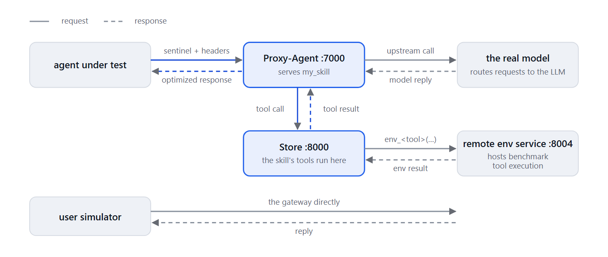

The Black-Box Approach: Optimizing Agent Capabilities with CapEvolve Without Modifying the Agent
What if you want to improve an agent but cannot modify it directly? Perhaps it's a packaged product, a production deployment, or an agent you don't own.
Most tools that make an AI agent better assume they can reach inside it, and so does cap-evolve in its direct approach: it edits the agent's prompt file, rewrites its tool code, then runs it again and checks the score. That works when the agent is yours: a project you know well, whose code you are willing to open to an outside process, such as an optimizer, that edits it for you.
Real agents are often built differently. Some owners, enterprises in particular, cannot give an optimizer access to their agent's internal code or modify its implementation. For them, optimization has to work from the outside: it improves the agent without inspecting it or modifying it directly.
This is where cap-evolve's black-box approach comes in. Here, cap-evolve deploys the capabilities it optimizes (system prompts, tools, skills) to the Skillberry Store, and the Skillberry Proxy-Agent reads them from there and injects them into the agent's LLM calls. The benchmark agent itself is left unchanged: it simply receives the optimized response from Skillberry.

Meet cap-evolve, in 30 seconds
You give cap-evolve your agent and your own tests. It runs a loop: try the agent, look at what failed, propose a fix, re-test, and keep the fix only if the gain beats the measurement noise. At the end it scores a sealed test set it never optimized on, once. It can change the system prompt, the tool code or a whole skill package, and it drives the coding-agent CLI you already use (Claude Code, Codex, Cursor and others). It is free and Apache-2.0 licensed.
Two minutes, no API key:
git clone https://github.com/skillberry-ai/cap-evolve.git && cd cap-evolve
python3 -m venv .venv && source .venv/bin/activate && pip install ./core
bash examples/toy_calc/run.sh # zero-API demo: the prompt goes 0.0 → 1.0
If this sounds useful, ⭐ star cap-evolve on GitHub — it takes five seconds, and it really does help other people discover the project.
For further reading refer to these Cap-evolve blogs:
CapEvolve: Optimize agentic capabilities — with agents
A coding agent improves prompts, tools, and skills through iterative optimization.The State of AI Agent Optimization in 2026 (and Where cap-evolve Fits)
Anyone can make a score go up. The hard part is proving it wasn't luck.
Now, back to what brought us here: the black-box approach on a real benchmark.
Does delivery through a proxy cost you anything? The τ²-bench numbers
The question that matters is not whether the blackbox approach improves an agent. It is whether it measures the same improvement as the direct approach.
What is τ²-bench?
τ²-bench is a public benchmark for customer-service agents. Each benchmark task represents a customer
request, such as changing a flight or making a reservation. A simulated customer interacts with the
agent, which must complete the request using tools such as flight search and booking systems. A task
passes only if the final state of the underlying database exactly matches the expected outcome.
To answer that question, we ran one optimization twice on τ²-bench's airline domain. Each task runs 5 times, because the same agent can pass a task once and fail it the next time. We changed only how each candidate reaches the model, and kept everything else identical:
One variable: the delivery
| Direct | Blackbox | |
|---|---|---|
| ✓ The same on both approaches | ||
| Benchmark | vanilla τ²-bench airline, pinned to one commit, never edited | |
| Tasks and trials | 7 tasks (8, 10, 20, 23, 35, 42, 44) × 5 trials each | |
| Models | agent claude-haiku-4-5, simulated customer claude-sonnet-5 | |
| Optimizer and loop | Claude Code (claude-opus-5-5), hill-climb, 3 iterations, the same significance gate | |
| What is optimized | the agent's tools | |
| ≠ The only difference | ||
| How a candidate reaches the model | tool code loaded into the runner | a skill in the Skillberry Store, injected by the Proxy-Agent |
In our experiment, the answer is no: the two approaches came out similar, with close final scores, the same kinds of mistakes, and an optimizer bill within about a fifth.
Direct and blackbox, side by side
| Direct | Blackbox | |
|---|---|---|
| Gain over the starting tools | +0.400 | +0.371 |
| ± one standard error | 0.144 | 0.143 |
| Final test (same 7 tasks): starting tools → best | 0.400 → 0.800 | 0.343 → 0.714 |
| Optimizer tokens | 17.1M | 17.8M |
| Optimizer spend | $12.24 | $14.75 |
| Optimizer time | 71 min | 91 min |
| Benchmark time (baseline, iterations, final test) | 28 min | 57 min |
Source: the two cap-evolve run folders: direct measured on Nov 4, blackbox on Nov 5. Train, val and test are the same 7 tasks.
The final scores differ by 0.086, well under one combined standard error (about 0.20) at 35 rollouts per side. The agent also fails in much the same way: across the starting tools and every candidate, 44 of 140 validation rollouts fail on the direct approach and 49 of 140 on the blackbox approach, and the starting tools fail 21 of 35 and 23 of 35 final-test rollouts (direct and blackbox). The three top causes are the same on both: a required write that is missing, no write at all, or an extra or wrong write. The optimizer's spend and tokens are close (1.2× and 1.04×). The benchmark itself runs about twice as long through the proxy, because this example sets a blackbox concurrency limit of 5 conversations at a time (direct runs up to 125).
The same kinds of failures on both approaches
Every failing rollout, classified from its trajectory: the agent's database writes against the task's expected actions in τ²-bench.
| Failure cause | Val · direct | Val · blackbox | Test seed · direct | Test seed · blackbox |
|---|---|---|---|---|
| A required write is missing | 16 | 20 | 4 | 5 |
| An extra or wrong-type write | 8 | 10 | 7 | 7 |
| No write at all | 12 | 11 | 6 | 9 |
| A wrong value (payment, flights, baggage, passengers) | 4 | 7 | 3 | 1 |
| Other (an unneeded write, a failed non-database check) | 4 | 1 | 1 | 1 |
| Failing rollouts | 44 / 140 | 49 / 140 | 21 / 35 | 23 / 35 |
Val: the starting tools plus the optimizer's three candidates (one per iteration), each scored on 35 rollouts during the run, 140 per approach.
Test seed: the unchanged starting tools, scored on the final test at the end of the run. A conversation handed to a human agent counts as "no write at all". Source: the direct run folder from Nov 4 and the blackbox run folder from Nov 5.

The store skill: where the optimized capabilities live
As mentioned earlier, the blackbox approach deploys the capability it optimizes to the Store and the
Proxy-Agent. That capability is deployed as a skill, which this post calls the store_skill. It is a folder
that contains a SKILL.md file, with a name, a description and
instructions to be sent to the model, and a scripts/ folder, where each script is a tool the model can call. It is
the open Agent Skills format, the same unit AI agents load from
disk. It is also the unit the Skillberry stack is built around.
The Skillberry Store is an
open-source service that manages everything your agents use — tools, skills and snippets — in one
place. You add, update, version and organize them in namespaces, find them by meaning with semantic
search, run them in a sandbox, and serve any subset of them as a virtual MCP server. Skills follow the
Anthropic skill format (SKILL.md, tools and docs), so you can import and export them as they
are.
The Proxy-Agent sits on top of it: it picks one skill and, on every call, gives the model that skill's instructions and its tools.
For further reading on how the Store manages skills, see its features page.
What lives where, and how it reaches the model
| What cap-evolve optimizes | Where it lives in the skill | How it reaches the model |
|---|---|---|
| Instructions (the system prompt) | SKILL.md | the Proxy-Agent adds them to the model's prompt |
| Tools | scripts/*.py, one tool per script | the Store publishes each script's schema for the Proxy-Agent to pass to the model; the script runs in the Store |
| A whole skill package | both | both |
In this post the skill is called store_skill. The name is just one line in the run's spec,
skill_name: store_skill, and any name works.
Seeded, edited, deployed, served, exported
- Seeded at onboarding, from the benchmark's own tools.
- Edited by the optimizer: each candidate is a new version of
store_skill. - Deployed: the new version replaces the old one in the Store.
- Served by the Proxy-Agent to the model, on every call, while the agent stays unchanged.
- Exported at the end: the winning version either stays in the Store, or goes home into the owner's benchmark.
From one prompt to a complete optimization run
Nothing here is hand-built for τ²-bench. Your coding agent (for example, Claude Code) onboards the
benchmark by following one prompt, PROMPT.md.
When asked how a candidate should reach the model, you answer blackbox.
From there, your coding agent installs the benchmark, seeds the capability from the benchmark's own
source, and adds the tailoring the approach needs. It then runs cap-evolve check, makes
sure it passes, and starts the optimization loop: it proposes edits, keeps only those that clear the
significance gate, scores the sealed test, and writes a report.
When onboarding is done, you have five things:
- τ²-bench, cloned and installed as is. Nobody edits it.
- The Skillberry Store and Proxy-Agent, each cloned into its own Python venv. A run just starts them; it never installs anything.
- 14 frozen primitive tools: τ²'s real airline tool code, placed in the Store as is. The optimizer can't change them, so every database read and write still runs τ²'s own code.
- The seed
store_skill: the skill described above, with one script per tool, built on top of the primitives. This is what the optimizer edits:
Each script starts out as just a signature, τ²'s docstring, and a call to its primitive:store_skill/ ├── SKILL.md # name, description, instructions └── scripts/ ├── <tool_1>.py # one file per tool the model can call ├── <tool_2>.py └── …def get_user_details(user_id: str): """Get the details of a user, including their reservations. ...""" return env_get_user_details(user_id=user_id) # a frozen primitive - The adapter and its tailoring module, which connect τ² to the Skillberry stack from the outside, without changing a line of τ².
The tailoring is where the blackbox approach meets the benchmark. Each hook is small, and the run fails if any one of them is missing:
The blackbox hooks
| Hook | What it does |
|---|---|
| A registered domain | airline_skillberry, through τ²'s own registration API, so τ² itself stays untouched |
| Agent routing | τ²'s stock llm_agent, with its model pointed at the Proxy-Agent's sentinel model |
| Skillberry context | three headers on every agent call: skillberry-context-plugin, -env_id, -task_id |
| One environment per trial | started and stopped on τ²'s environment service, so the skill's tools act on that trial's database |
| Trajectory merge, before scoring | the environment's record of tool calls, so τ²'s evaluator sees the real database writes |
| Trajectory merge, after scoring | the Proxy-Agent's record, so the optimizer sees what the skill's tools did |
| Session close | disconnect in a finally: the Proxy-Agent removes the trial's virtual MCP server |
The diagram below reads left to right: onboarding prepares τ²-bench and the Skillberry stack once;
each iteration edits store_skill, deploys it and lets the gate decide; and every trial of
that iteration sends the agent's calls through the Proxy-Agent and the Store to τ²'s environment.

Inside a trial, every call the agent makes to its model goes through the Proxy-Agent, which adds the skill's instructions and tools; when the model calls a tool, its script runs in the Store against τ²'s environment. τ² then scores the trial as usual. The simulated customer never goes through the proxy.
Explaining how a candidate tool is being modified, end to end
To make this concrete, let's follow one tool from the moment the optimizer writes it to the moment it changes τ²'s database.
The best blackbox candidate added a tool that the starting (seed) skill didn't have:
search_flights_by_price. It changed task 35 the most: the task passed 0 of 5
trials with the starting tools, and 5 of 5 with the best candidate during the
run (4 of 5 on its final test).
A few words on task 35. It simulates a customer who calls with two requests. First, they insist on cancelling an upcoming flight with a full refund, which the airline's policy doesn't allow, so the agent must refuse. Then they want to book a new flight from JFK to SFO, which should be "the second cheapest flight in economy". The cheapest option is a direct flight, HAT023, for $163. The right answer is the next one, a one-stop trip via Seattle (HAT069, then HAT258), for $290. The second request must be handled correctly for the task to succeed (receive a reward of 1.0).
1 · The failure. The customer wants "the second cheapest flight in economy". The starting tools search direct and one-stop flights separately, so the agent has to merge the two lists and rank the prices itself. It got it wrong in every trial: it booked a wrong flight, booked the right one twice, or never booked at all. τ²'s final database didn't match the expected one, and every trial scored 0.
2 · The edit. The optimizer adds one script, store_skill/scripts/search_flights_by_price.py:
a tool that searches direct and one-stop flights together and returns every option with a free seat,
ranked from cheapest to most expensive, each with the exact flight list to book. Its docstring tells the
model to use it whenever the customer chooses a flight by price, or doesn't mind direct or one-stop, and
to book the chosen option exactly as returned.
def search_flights_by_price(origin: str, destination: str, date: str, cabin: str,
depart_after: str = "", max_stops: int = 1):
"""Search ALL itineraries (direct AND one-stop) on a date, for one cabin,
sorted from CHEAPEST to most expensive. Use this whenever the user asks for the
cheapest / second cheapest option. "rank" 1 = cheapest."""
direct = env_search_direct_flight(origin=origin, destination=destination, date=date) # frozen primitive
onestop = env_search_onestop_flight(origin=origin, destination=destination, date=date) # frozen primitive
... # keeps options with a free seat in the cabin
out.sort(key=lambda o: (o["price_per_passenger"], o["stops"]))
3 · Into the skill. cap-evolve deploys the candidate: it imports the
store_skill into the Skillberry Store, and restarts the Proxy-Agent bound to it. The Store
registers the new script as a tool and derives its JSON schema from the signature and docstring. This is what the
Store keeps for the new tool:
{
"name": "search_flights_by_price",
"params": {
"type": "object",
"properties": {
"origin": { "type": "string", "description": "The origin city airport in three letters, such as 'JFK'." },
"cabin": { "type": "string", "description": "One of 'basic_economy', 'economy', 'business'." },
"depart_after": { "type": "string", "description": "Optional earliest departure time of the first flight, ..." },
"max_stops": { "type": "integer", "description": "1 (default) = direct and one-stop options; ..." },
"...": "2 more parameters"
},
"required": ["origin", "destination", "date", "cabin"]
}
}
4 · What the model sees. In the next evaluation run, the Proxy-Agent lists the new tool next to the others, and the model receives the tool's JSON schema mentioned above.
5 · The call. A real call from a task-35 trial:
search_flights_by_price(origin="JFK", destination="SFO", date="2024-05-24", cabin="economy")
The script runs inside the Store. It calls both search primitives, keeps only the options with a free
seat, and ranks them by price. The model then books the second cheapest option, the one-stop HAT069 + HAT258, with τ²'s own
book_reservation.
6 · The effect. τ²'s final database matches the expected one, and the trial scores 1.0. The agent's code, the benchmark and the scorer are exactly what they were before; only the skill in the Store changed.
Once the optimization is done, the owner has two ways to use what it produced:
- Keep it in Skillberry. Leave the best skill in the Store and keep the agent pointed at the Proxy-Agent. The agent and the benchmark never change; they simply get better answers.
- Take it home. Export the best candidate's skill from the folder cap-evolve writes for the run, and patch it into your own copy of the benchmark. From then on it runs there, with no Skillberry stack at all.
The rest of this post takes the second way. We optimize a real benchmark, τ²-bench, through Skillberry, then take the winning skill out of the run folder and patch it into a plain copy of τ²-bench, step by step, with the numbers before and after.
Taking the winner home: patching your own τ²-bench
An optimized skill is only useful if its owner can run it where they need it. So the last step is the
reverse trip: take the best candidate out of the Store, and put it into a plain, unmodified copy of
τ²-bench, with no Skillberry stack at all. The procedure changes exactly one file, the airline domain's
tools.py, and every step of it is mechanical.
1 · Take the winner's scripts from the run folder:
.capevolve-blackbox/run/candidates/cand_0002/store_skill/scripts/ # 18 tools
2 · Clone τ²-bench:
git clone https://github.com/sierra-research/tau2-bench.git
3 · Patch src/tau2/domains/airline/tools.py by four rules:
How a store skill becomes τ² tools
τ²'s AirlineTools is renamed _AirlinePrimitives, body unchanged. Every database read and write still runs τ²'s own code.
Each script becomes a method of a new AirlineTools, word for word, plus self and a decorator.
_orig forwards to the primitivesAirlineTools gets an _orig method that forwards a call to τ²'s original/primitive tool on _AirlinePrimitives. Every method of the new AirlineTools reaches the primitives through it.
The candidate's argument models are kept, so the agent sees the same tool schemas as through the proxy.
# src/tau2/domains/airline/tools.py, patched
class _AirlinePrimitives(ToolKitBase): # τ²'s original AirlineTools, unchanged
...
class AirlineTools(_AirlinePrimitives): # what τ² now serves to the agent
def _orig(self, tool, **kwargs): # an original tool, returned as the Store returned it
try:
resp = getattr(_AirlinePrimitives, tool)(self, **kwargs)
except Exception as e:
return f"Error: {e}"
content = Environment.to_json_str(resp)
try:
return json.loads(content)
except (TypeError, ValueError):
return content
@is_tool(ToolType.READ)
def search_flights_by_price(self, origin: str, destination: str, date: str, cabin: str, ...) -> Any:
"""...the candidate's docstring, word for word..."""
direct = self._orig("search_direct_flight", origin=origin, # was env_search_direct_flight(...)
destination=destination, date=date)
onestop = self._orig("search_onestop_flight", origin=origin, # was env_search_onestop_flight(...)
destination=destination, date=date)
...
out.sort(key=lambda o: (o["price_per_passenger"], o["stops"], str(o["departure_time_est"])))
...
4 · Run the same command on both copies, unpatched and patched, with the same models, tasks and trial seeds:
tau2 run --domain airline --task-ids 8 10 20 23 35 42 44 --num-trials 5 \
--agent llm_agent --agent-llm openai/aws/claude-haiku-4-5 \
--user-llm openai/aws/claude-sonnet-5 --max-concurrency 50
5 · The result.
The winner, running with no proxy at all
| Task | Unpatched | Patched | Blackbox run (best) |
|---|---|---|---|
| 8 | 0.4 | 1.0 | 1.0 |
| 10 | 0.6 | 1.0 | 0.8 |
| 20 | 0.0 | 1.0 | 0.8 |
| 23 | 0.0 | 0.6 | 0.0 |
| 35 | 0.0 | 0.8 | 0.8 |
| 42 | 0.2 | 0.8 | 1.0 |
| 44 | 0.0 | 0.4 | 0.6 |
| Mean | 0.171 | 0.800 | 0.714 |
The blackbox run's best candidate patched into plain τ²-bench. Same settings (model and eval parameters) in both τ² runs; the only difference is the patched tools.py.
If the patched copy scores close to what the blackbox run measured, the loop is closed: a capability optimized through the Store and the Proxy-Agent, on an agent and a benchmark nobody edited, becomes plain code its owner can run anywhere.
What we learned
You don't need to open an agent to improve it: in our τ²-bench runs, capabilities optimized from the outside came close to the direct approach, and exported back into ordinary tool code that held up in plain τ²-bench.
We expect the approach to carry over to other benchmarks: it needs only an agent whose LLM endpoint can be pointed at the Proxy-Agent, and tools the Store can call. We have only tested τ²-bench so far; other benchmarks are the next step, so stay tuned.
Limits, honestly
- No held-out split. Train, val and test are the same 7 tasks, so every number here is a fit. The next run needs tasks the optimizer never saw.
- The agent's own cost is not counted. The Proxy-Agent doesn't report token usage, so the agent's cost reads as 0 on the blackbox approach — not measured, not free.
Try it
cap-evolve is open source, Apache-2.0: github.com/skillberry-ai/cap-evolve.
The two runs above come from examples/tau2_sierra_airline,
one folder per approach, and the Blackbox tab
explains how to set the approach up for your own benchmark. If this was useful, ⭐ star the repo — it is how
other people find it.